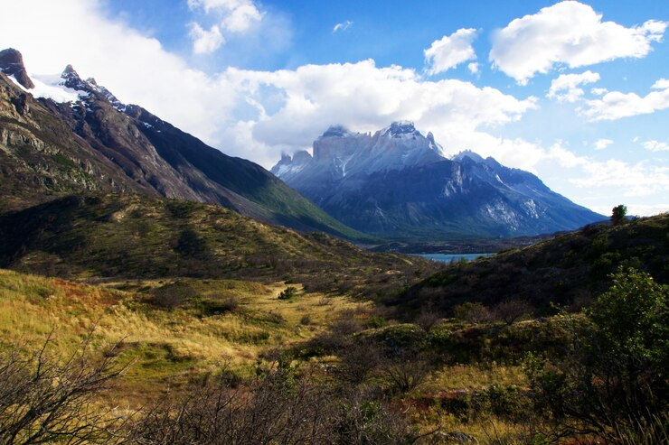

Patagônia

A Patagônia é uma região famosa por suas paisagens impressionantes e trilhas de aventura, ideal para exploradores e amantes da natureza.
Pontos Turísticos
- Glaciar Perito Moreno
- Parque Nacional Torres del Paine
- Ushuaia
Cuidados a Serem Tomados
- Vista-se em camadas para se adaptar ao clima variável.
- Respeite a fauna e a flora locais.
- Esteja preparado para trilhas longas e terrenos desafiadores.